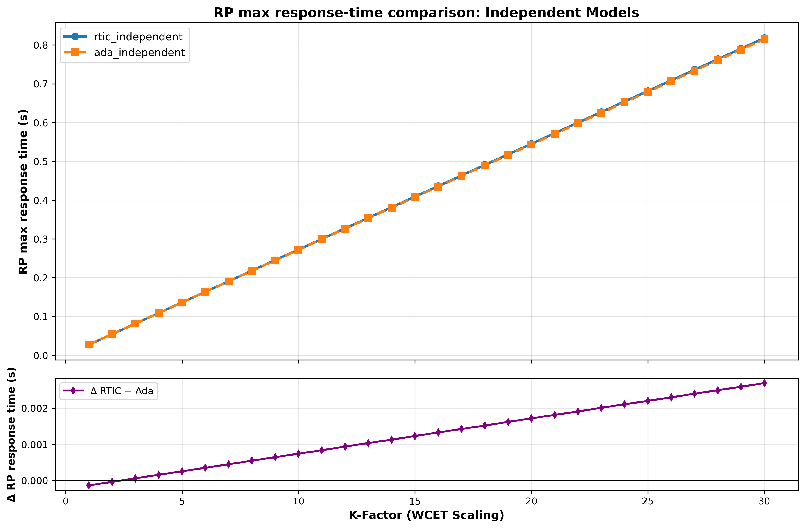
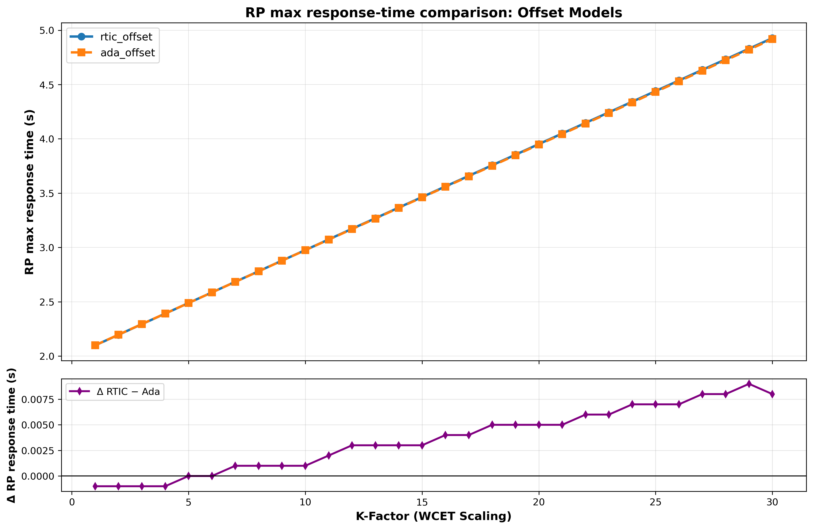
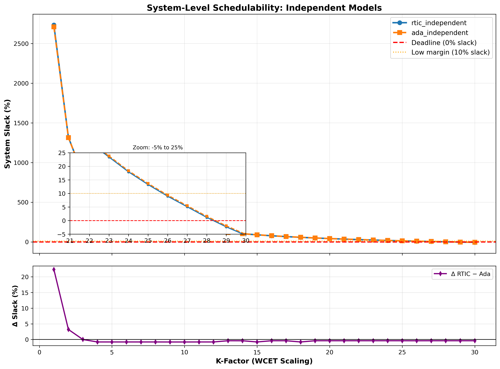
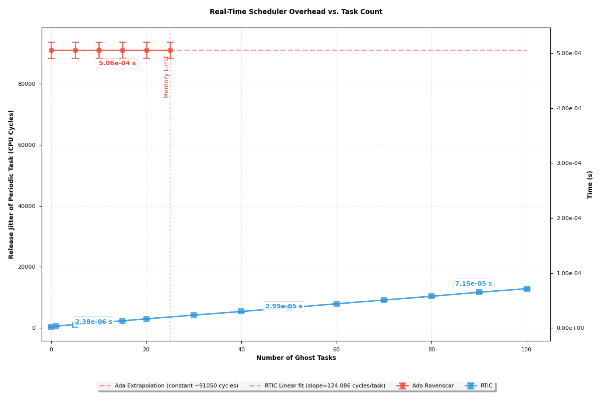

19th of March, 2026
Real-time systems are distinct from general-purpose computing in that
their correctness depends not only on the logical result of computation
but also on the time at which these results are produced (Engblom et al.
2001). The criticality of a real-time system determines how
problematic a missed deadline can be (Engblom et al. 2001). A primary
architectural requirement for such systems on this spectrum is
predictability (Puschner and Burns 2000); the
feasibility of soundly establishing temporal behaviour, ranging from
full determinism to bounded uncertainty.
To provide these guarantees, system designers rely on schedulability
analysis, a methodology that determines whether a given set of tasks can
meet their deadlines when executed on a specific platform. This analysis
requires precise upper bounds on the execution time of code, known as
Worst-Case Execution Time (WCET) (Wilhelm et al. 2008). This study
provides a comparative evaluation of the real-time capabilities of Ada
Ravenscar and Rust RTIC. Using Generic Environment Executive (GEE) as a
reference real-time application case study (Hu and Gobbo 2020), both
implementations are evaluated on an STM32F429I-Discovery board (ARM
Cortex-M4).
This paper introduces the Ada Ravenscar and Rust RTIC frameworks,
describes the GEE application, examines the RTIC implementation with
emphasis on runtime abstractions and timing implications, analyses task
definitions and synchronisation primitives, and uses the modelling and
Analysis Suite for Real Time applications (MAST)(Harbour et al. 2001) to compare the
differences in schedulability.
The Ada programming language has long been used for high-integrity
systems due to the available deterministic constructs, and built-in
support for concurrency (Engblom et al. 2001) (Burns, Dobbing, and
Vardanega 2017). The full Ada tasking model includes
non-deterministic features that render static timing analysis
infeasible. To address this, the Ravenscar Profile was defined as a
restricted subset of Ada tasking (Burns, Dobbing, and Vardanega
2017).
Ravenscar enforces a static existence model, and a deterministic
execution model with predefined, recurrent tasks and resources,
prohibiting dynamic creation and abort statements to ease system
analysability (Burns, Dobbing, and Vardanega
2017). The profile grants both exclusion
synchronisation (mutual exclusion) and avoidance
synchronisation (condition-based waiting) via protected entries
and suspension objects. Concurrency control relies on Protected Objects
(POs), which use the Immediate Priority Ceiling Protocol (IPCP) (Burns, Dobbing, and
Vardanega 2017), to ensure mutually exclusive access, prevent
deadlocks and bound priority inversion, enabling rigorous Response Time
Analysis (RTA) (Burns, Dobbing, and Vardanega
2017).
The system employs preemptive fixed-priority scheduling (FPS), managed
by a software kernel runtime that also handles context switching and
time management. Temporal predictability is guaranteed by time-based
semantics (like delays and deadline monitoring) with a periodic SysTick
interrupt handler. The SysTick handler runs at the highest hardware
priority, so that the scheduler bounds release jitter and accurately
tracks time.(Vardanega, Zamorano, and Puente
2005).
Rust is increasingly discussed for embedded systems due to its compile-time memory safety and modern tooling. The Real-Time Interrupt Driven Concurrency (RTIC) framework, formerly RTFM, is a DSL built on top of Rust that maps tasks to hardware interrupt vectors on ARM Cortex-M microcontrollers. Concurrency control uses the Stack Resource Policy (SRP), a Stack-Based Immediate Priority Ceiling Protocol (SB-IPCP) variant, to guarantee deadlock-free execution (Baker 1991; Lindgren, Dzialo, and Lunnikivi 2023; Eriksson et al. 2013).
RTIC defines two task classes that safely share a single stack:
Hardware tasks: statically bound to specific peripheral interrupt vectors and scheduled directly by the Nested Vectored Interrupt Controller (NVIC).
Software tasks: async functions dispatched by priority‑specific interrupt executors that can yield at explicit await points. There are no limits to the number of software tasks; however, priority levels are bounded by the free vectors available in the NVIC.
To execute these tasks, scheduling is delegated to the hardware NVIC.
Tail-chaining is a hardware optimisation implemented in Cortex-M
processors such that when an exception enters a pending state while the
processor is handling another exception of the same or higher priority,
the pending exception is subsequently handled without un-stacking and
re-stacking core registers (Yiu 2011). This reduces
context-switch latency between successive interrupts (Yiu 2011).
Because RTIC directly maps task priorities to hardware interrupt
priorities, the NVIC automatically tail-chains into the next
highest-priority pending task, natively enforcing the strict priority
ordering required by the SRP (Lindgren, Dzialo, and Lunnikivi
2023).
Shared resources are protected by SRP critical sections. Each resource
has a compile‑time-computed ceiling, and locking elevates the task’s
effective dynamic priority via the BASEPRI register, which
temporarily masks lower-priority interrupts. Furthermore, RTIC is deeply
integrated with Rust’s async/await model; tasks are viewed as the
synchronous sections between await points, thus, no shared resources are
able to be held at points of suspension, which is enforced by the
compiler (RTIC Community
2024). RTIC minimises memory usage by relying on a single stack,
enforcing a strict LIFO (Last-In, First-Out) execution order where
higher-priority tasks always complete before lower-priority tasks can
resume.
The original GEE application definition from Hu and Gobbo (Hu and Gobbo 2020)
was used as the baseline and modelled with the MAST Suite (Harbour et al.
2001).
A transaction, as defined by MAST, models a set of
interrelated tasks triggered by a single external event, such as a
periodic timer or a hardware interrupt (Harbour et al. 2001; Hu and
Gobbo 2020). By grouping tasks into a transaction represented as
a graph of event handlers, the model can accurately capture the causal
flow of events, precedence constraints, relative time offsets, and
global end-to-end deadlines throughout the system (Harbour et al. 2001; Hu and
Gobbo 2020).
The modelled GEE application is composed of the following four
transactions:
Regular Producer Transaction: Activated periodically every 1,000,ms, with a 500,ms hard global deadline relative to its activation.
On-Call Producer Transaction: Activated by a bounded aperiodic event with a minimum interarrival time of 3,000,ms and an 800,ms hard global deadline.
Activation Log Reader Transaction: Released by the periodic process to perform checks on recorded interrupt entries, with a minimum interarrival time of 3,000,ms and a 1,000,ms hard global deadline.
External Event Server Transaction: Serves as the software-level interrupt handler, activated by an external event with a minimum interarrival time of 5,000,ms and a 100,ms hard global deadline.
The original application uses Protected Objects to manage all shared state and synchronisation. Each PO is assigned a priority ceiling (e.g., Request_Buffer with ceiling 9, activation_log with ceiling 13). A. Burns, B. Dobbing, and T. Vardanega offer a more detailed implementation description (Burns, Dobbing, and Vardanega 2017).
We ported the GEE application to RTIC with the objective of preserving the original task set, activation patterns, and shared-resource interactions whilst expressing them using RTIC’s task model and synchronisation primitives. The implementation follows RTIC’s standard design pattern as defined in the official documentation (RTIC Community 2024), combining hardware tasks for interrupt-bound activities and asynchronous software tasks for periodic and event-driven behaviour.
The exact static priority values from Hu and Gobbo were preserved (Hu and Gobbo 2020). These values were originally assigned according to Deadline Monotonic (DM) scheduling, an optimal fixed-priority algorithm where tasks with shorter relative deadlines receive higher priorities (Hu and Gobbo 2020).
Implemented as a software task with priority 7, released by the monotonic timer via Mono::delay_until(next_time).await; it executes a fixed workload and conditionally triggers sporadic activity. Its shared resource is a read-only copy of the activation time.
A sporadic software task with priority 5 that remains suspended until data is available; activations are triggered by the Regular Producer. Its shared resource is a read-only copy of the activation time.
A sporadic software task with priority 11 that awaits on a signal from the hardware task ISR EXTI0 (#[task(binds = EXTI0)]). Its shared resources include the read-only activation time, as well as the SRP-based activation log.
A sporadic software task with priority 3, that awaits on a signal from the regular producer. Its shared resources include the read-only activation time, as well as the SRP-based activation log.
The Ravenscar Projected Objects and Suspension Objects were replaced using RTIC’s synchronisation primitives, maintaining equivalent interaction patterns:
Request Buffer: The PO Request_Buffer acts as the interface between the Regular Producer and the On-Call Producer, providing a suspending entry (Extract) and a non-blocking deposit (Deposit). It is replaced by a statically bounded rtic::sync::channel. Since the two tasks share a strict precedence relation within the same transaction, the buffer will in practice never hold more than one unread request at a time (Hu and Gobbo 2020). It is sufficient to set the channel size equivalently to the buffer size of 5 as specified in the original GEE application (Burns, Dobbing, and Vardanega 2017). Non-blocking deposit is achieved through the try_send method (reproducing the boolean return on failure), and the suspended entry is achieved through receiver.recv().await replicating the barrier that waits on empty). Because the channel endpoints are owned by specific tasks, it avoids the need for an SRP priority-ceiling.
Event Queue and local suspension object: The protected object Event_Queue and the local suspension object are replaced by rtic::Signal instances. The Event_Queue, previously a Protected Object with a ceiling priority, is mapped to a signal with "latest-only" semantics; new events overwrite previous values, effectively coalescing interrupt bursts. The EXTI0 interrupt simply writes to the signal and the External Event Server awaits it, ensuring the ISR remains minimal and processing occurs at the task’s priority. Similarly, the log reader uses a signal as a simple asynchronous notification flag.
Activation Log: The protected object Activation_Log is replaced by a shared RTIC resource wrapping a custom ActivationLog struct. This struct encapsulates the log state, maintaining a modulo-100 counter and the last event timestamp. Access is managed via mutual exclusion under SRP. The resource’s priority ceiling is automatically derived at compile time based on the tasks sharing it.
All tasks are synchronised to a common activation time computed
during initialisation. RTIC’s monotonic timer (SysTick-backed for
consistency with the Ada Ravenscar runtime) is started in init,
and the calculated start timestamp is distributed to all tasks as a
shared resource. Each task performs an asynchronous delay
(delay_until) to this common activation instant before entering
its periodic or sporadic execution loop. This replicates the “common
start” assumption used in the Ada version and ensures comparable phasing
between implementations by establishing a common epoch, which also helps
to enforce precedence relations across tasks (Burns, Dobbing, and Vardanega
2017).
A common activation instant causes the system’s critical instant (Vardanega, Zamorano,
and Puente 2005; Hu and Gobbo 2020). By forcing the periodic
Regular_Producer and the simulated Force_Interrupt to
release simultaneously, maximum initial contention is achieved, exposing
lower-priority tasks to their theoretical maximum preemption
interference (Vardanega, Zamorano, and Puente
2005), thereby ensuring worst-case response times.(Hu and Gobbo
2020).
Ravenscar mandates IPCP via the GNAT runtime (System.BB), where explicit PO_Enter/Exit calls dynamically raise the task’s active priority to the object’s ceiling. Conversely, RTIC implements SRP directly through hardware manipulation of the Cortex-M BASEPRI register. They are equivalent in preventing deadlock and bounding priority inversion, differing in implementation. RTIC’s hardware-backed approach reduces overhead of the management of shared resources to single instructions, effectively eliminating the software abstraction penalties incurred by the Ada runtime.
Whilst Ada enforces strictly priority-limited blocking via IPCP, RTIC introduces a secondary, distinct blocking term; Non-Preemptive Blocking, Bnp, which arises from the use of global interrupt masking (PRIMASK) for critical sections within the source code. This mechanism is fundamental to the safety of RTIC’s core abstractions, including Channels, Signals, Timer Queues (used by delay_until), and Waker registrations. This enables safe, atomic access to shared state without mutexes, however, it inevitably creates short intervals where all interrupts are disabled, introducing release jitter for all tasks, including the SysTick monotonic Timer. Although the framework’s source code claims these critical sections are insignificantly small (RTIC Community, n.d.), their cumulative impact cannot be ignored in rigorous schedulability analysis.
The RTIC implementation utilises a SysTick-backed monotonic timer. This configuration forces RTIC into a periodic interrupt model, negating the efficiency of its native tickless architecture (RTIC Community 2024) and representing a worst-case performance scenario. While the Ada runtime executes a constant-time O(1) check on the delay queue, the RTIC implementation employs a linked-list TimerQueue that requires traversal, resulting in O(N) complexity for N active timers. The documentation states that compared to the SysTick offered, the RP2040 is a "’proper’ implementation with support for waiting for long periods without interrupts" (RTIC Community 2024).
The reliance of rtic::sync on global critical sections introduces non-preemptive blocking that complicates hard real-time analysis. An approach to mitigate this would be to utilise an alternative architectural pattern that avoids the async/await paradigm in favour of explicit run-to-completion tasks.
In this model, the "wait" (avoidance synchronisation) provided by channels is replaced by a "spawn" mechanic. A producer task locks a shared buffer (protected via SRP/BASEPRI), enqueues data, and explicitly spawns the consumer task. The consumer then preempts, locks the buffer to retrieve the data, processes it, and exits.
This approach will significantly reduce non-preemptive blocking (Bnp), simplify modelling by limiting global masking strictly to the monotonic timer’s operations and aligning the system’s behaviour closer to the deterministic ideal of Ada Ravenscar.
This case study highlights a fundamental divergence in
synchronisation semantics, which is crucial to understand for the
modelling of predictable real-time systems.
Ada Ravenscar employs Protected Objects as a unified abstraction for
mutual exclusion, task synchronisation, and priority control (Burns, Dobbing, and
Vardanega 2017). By coupling guard checks and blocking logic for
not only shared resources but all message passing within a single
construct, restricted to one entry with no queuing, the profile ensures
clear, deterministic semantics for blocking times (Vardanega, Zamorano, and Puente
2005).
Conversely, RTIC treats mutual exclusion and synchronisation as
orthogonal concerns. Shared resources are strictly protected by
SRP-based critical sections, while suspension is handled via distinct
asynchronous primitives (RTIC Community 2024). Decoupling
synchronisation from data protection seems to be a by-product of the
integration with Rust’s async model. Consequently, waiting becomes an
explicit orchestration step distinct from resource access, rather than
being an intrinsic, atomic property of the resource itself.
The two ecosystems offer different capabilities and challenges for measuring performance and verifying correctness.
The Ada environment provides a built-in Execution Time clock (ETC)
that measures CPU time only when a specific task is actively running.
This is useful for accurate WCET analysis. RTIC lacks a direct
equivalent.
The Data Watchpoint and Trace (DWT) cycle counter was used for
execution‑time measurements in RTIC, including in‑application
task_metrics.rs instrumentation and GDB breakpoint-based
scripts to profile RTIC internals and critical sections. The GDB method
is more error‑prone (breakpoint placement, runtime interference) and
requires cautious interpretation (Arm Limited 2026).
The Ada runtime includes a Timing Event facility that invokes a handler directly from the clock interrupt when a deadline is missed, providing built-in overrun detection. In the RTIC implementation, release_time is tracked to calculate the relative deadline and the job end is checked to log a miss via defmt:
if Mono::now() > deadline {
defmt::warn!("On Call Producer missed its deadline!");
}Task_metrics.rs wraps all synchronous, non-preempted code in
start_subtracking() and end_subtracking(), logging the
start-to-end cycle count from the DWT cycle timer using defmt
semi-hosting.
System_overhead.rs records job start‑to‑end execution. System overhead
is extracted by subtracting the cumulated task_metrics
measurements from the job’s total execution time.
In the context of RTIC and Rust’s ‘async‘/‘await‘ model, it is
important to carefully consider WCET. For asynchronous operations like
channel.recv().await or signal.wait().await‘, WCET is
the total CPU cycles used to manage the state machine during the
wait.
We rely on measurement‑based analysis; this can
under-approximate the true WCET unless worst‑case hardware conditions
are exercised. Key synchronous phases to measure are submission/polling
(registering a ‘Waker‘, returning ‘Poll::Pending‘) and resumption
(executor re‑polling and returning ‘Poll::Ready‘).
The async executor operates on interrupts. Each priority level has a
dedicated dispatcher that polls all async tasks at that level. The
executor maintains atomic booleans for running, pending state, and the
task’s future. The waker is a function pointer that sets pending to true
and pends the interrupt.
Overhead that must be measured includes waker.wake(),
check_and_clear_pending(), future.poll().
Delay until
Encompasses the duration required to instantiate a Delay future
(see timer_queue.rs in (RTIC Community, n.d.)), register a
waiting waker in the linked list of the timer queue, and the intrinsic
polling and scheduling overhead incurred during the future’s polling
process.
Channel Recv
Awaits a polling function that registers a waker via
self.0.receiver_waker.register(cx.waker()). It then attempts to
dequeue using self.try_recv(), which returns either
Poll::Ready or Poll::Pending. The measurement includes
the execution time of the registration and dequeue operations, plus a
fixed 15-cycle overhead for function invocation and async
polling.
Channel Try_Send
Attempts to send a value on the channel without blocking, returning an
error if the channel is full. This synchronous operation includes one or
more critical_section regions. Breakpoints are used to measure
both the total execution time and the time spent inside
critical-section–protected code.
Signal wait
Waits for a new value and then reads it. If a value is already pending,
the function returns immediately. Upon reading, the value is evicted. As
with Channel Recv, the WCET includes the cost of
self.parent.waker.register(ctx.waker()) and the execution of
self.take(), which reads and evicts the value within a critical
section, plus associated overhead.
Signal write
Writes a value to the signal using Store::Set(value), which
additionally wakes the parent waker and replaces the stored value. The
operation executes within a critical_section, and its execution
time includes both the store update and waker notification.
The Ada Ravenscar implementation was re‑evaluated using the same DWT‑based GDB profiling technique for the runtime traps specified in the original analysis.
For the Ada Ravenscar runtime, the following runtime traps were measured:
__gnat_irq_trap: The wrapper in System.BB.Board_Support that handles interrupts before transferring control to the user-defined interrupt handler.
__gnat_pend_sv_trap: The PendSV handler responsible for context switching.
__gnat_sys_tick_trap: The system timer handler.
There are no equivalent software routines in RTIC. Consequently, a
new set of end-to-end latency tests was devised to benchmark RTIC system
overhead. For consistency and direct comparison, the same end-to-end
benchmarks were also applied to the Ada Ravenscar implementation.
The following end-to-end measurements were performed:
Interrupt Service Routine (ISR) Overhead: Measures the time from the start of the trigger of the interrupt to the ISR entry.
Context Switching and Dispatcher Latency: For Ada, an end-to-end sporadic_switch test is measured, tracking execution from a set_true operation in a producer task to the return from suspend_until_true in a consumer task (suspension object mechanism). For RTIC, both hardware dispatch via spawn() and software dispatch via signal() are measured to assess their respective overheads.
System Timer (SysTick) Overhead: Measures the execution time of the "on monotonic interrupt" handler within the RTIC timer_queue.
Both the Ada independent‑task and offset‑based MAST models were reconstructed from Hu and Gobbo (Hu and Gobbo 2020). While the Ada and RTIC models share the same processor and fixed-priority scheduling policy, they diverge significantly in their representation of runtime behaviour and shared resources.
All MAST models were implemented as template files populated by a JSON dictionary of measured WCET values. The analysis was automated using Python scripts to generate model instances, execute schedulability tests, and compile reports. Following the baseline analysis, four systematic experiments were conducted to examine specific system features.
The Ada Ravenscar model maps directly to MAST primitives, using
Shared_Resource objects to represent the request buffer,
activation log, and event queue. Each resource is assigned a specific
priority ceiling, enabling the analysis tool to apply the ICPP directly
(Burns, Dobbing, and
Vardanega 2017).
Conversely, the RTIC model requires a composite approach to abstract its
asynchronous runtime. Async primitives (channels, signals, and waker
registration) are modelled as sequences of operations. To account for
the priority inversion caused by RTIC’s reliance on global critical
sections, operations invoking rtic::sync are explicitly
modelled as locking a single global_critical_section resource
with the highest system priority (which presumably could preempt the
sys-ticker). Application-level shared state, such as the
activation_log, retains its SRP/ICPP model. This constraint is
necessary to capture the system-wide blocking inherent in the RTIC
implementation.
Objective: Determine the sensitivity of the system models to increasing computational load.
Method: The computational workloads of the Regular Producer, On-Call Producer, and Activation Log Reader are systematically increased by a scaling constant k, with a step size of 1, up to k = 30. Note that the empirical WCET values for the Whetstone benchmark differ between implementations due to the implementation of libm operations for sin, cosine, etc. To ensure a fair comparison in this experiment, the same base WCET values (derived from the Ada measurements) are applied to both models, eliminating discrepancy caused by arithmetic operations within the workload.
Objective: Determine the maximum CPU utilisation achievable by each system before a deadline miss occurs.
Method: The procedure described in the reference study is applied to identify the Whetstone scaling factors that result in maximal CPU utilisation. In contrast to Experiment I, this experiment utilises the specific empirically recorded WCETs for each platform to evaluate the native performance limits of the Ada Ravenscar and Rust RTIC runtimes.
Objective: Evaluate the scalability of the scheduler and system timer under increasing concurrent task load.
Method: The task set is augmented by introducing additional synthetic periodic tasks that utilise the monotonic timer (delay_until) to wake and yield. The impact of the increased timer queue depth on the worst-case response time (WCRT) of the Regular Producer is measured to quantify the scheduling overhead.
The measured worst‑case execution times (WCET) for the runtime primitives serve as inputs to the MAST models. These values (Table 1) quantify the cost of the asynchronous primitives of RTIC’s. Notably, the internal critical sections (CS) are short, with the longest continuous blocking section being only 2.46μs(channel_recv).
| Primitive | CS WCET | Total WCET | ||
|---|---|---|---|---|
| 2-3 (lr)4-5 | (cycles) | (s) | (cycles) | (s) |
| delay_until | 0 | 0.00E+00 | 150 | 5.56E-08 |
| signal_take | 25 | 1.39E-07 | 25 | 1.39E-07 |
| try_recv | 361 | 2.01E-06 | 4479 | 2.45E-06 |
| waker_register | 82 | 4.56E-07 | 1526 | 6.56E-07 |
| channel_recv | 443 | 2.47E-06 | 6005 | 3.11E-06 |
| signal_wait | 107 | 5.95E-07 | 1551 | 7.95E-07 |
| channel_try_send | 264 | 1.47E-06 | 6915 | 2.56E-06 |
| signal_write | 106 | 5.89E-07 | 2737 | 1.08E-06 |
| systick | 5.66667E-07 | 1.60E-06 | ||
| Event | WCET (cycles) | WCET (s) |
|---|---|---|
| RTIC context_switch (signal) | 437 | 2.42778E-06 |
| RTIC context_switch (spawn) | 105 | 5.83333E-07 |
| RTIC interrupt_entry | 48 | 2.66667E-07 |
| Ada Interrupt_Handling | 87 | 4.83333E-07 |
| Ada Sporadic_Switch | 641 | 3.56111E-06 |
End‑to‑end latency tests (Table 2)
reveal a significant performance advantage for the RTIC dispatcher. The
RTIC interrupt_entry overhead (266 ns) is approximately 45%
lower than the equivalent Ada Interrupt_Handling trap (483 ns).
This validates the architectural benefit of RTIC’s hardware-accelerated
model. However, the performance gap narrows significantly when
evaluating sporadic context switch.
Table 3 lists the overheads for the Ada Ravenscar runtime. ISR overhead recorded in this isolated manner is more equivalent to RTIC’s interrupt entry latency. The WCET of the context switch traps are also less than those reported for RTIC. All recorded values are a significant figure lower than those reported from Hu and Gobbo (Hu and Gobbo 2020), most likely due to the use of DWT with GDB scripting, reducing measurement overhead.
| Routine / Trap | WCET (cycles) | WCET (s) |
|---|---|---|
| context_switch_trigger | 5 | 2.78E-08 |
| pend_sv_handler | 76 | 4.22E-07 |
| sys_tick_handler | 48 | 2.67E-07 |
| ISR_Isolated | 43 | 2.39E-07 |
| Total Context Switch Overhead | 81 | 4.50E-07 |
| Operation | Ada WCET (s) | RTIC WCET (s) |
|---|---|---|
| Regular Producer | 1.76E-02 | 2.71E-02 |
| Overrun detection | 1.56E-05 | 3.11E-07 |
| RP Operation | 1.76E-02 | 2.71E-02 |
| Whetstone workload | 1.75E-02 | 2.70E-02 |
| Due activation | 2.66E-06 | 1.89E-07 |
| OCP Start / try send | 5.23E-05 | 1.77E-06 |
| Check Due | 2.83E-06 | 1.83E-07 |
| Activation Log signal | 5.53E-05 | 1.18E-06 |
| Output logging | 8.33E-06 | 6.64E-06 |
| Delay Until | 2.18333E-06 | 5.56E-08 |
| On-Call Producer | 6.47E-03 | 9.97E-03 |
| RB Extract / recv | 2.69E-06 | 3.11E-06 |
| Overrun detection | 1.49E-05 | 3.11E-07 |
| OC Operation | 6.45E-03 | 9.97E-03 |
| Whetstone workload | 6.44E-03 | 9.94E-03 |
| Output logging | 8.33E-06 | 6.51E-06 |
| Activation Log Reader | 3.30E-03 | 5.00E-03 |
| AL Wait | 1.76E-06 | 7.95E-07 |
| Overrun detection | 1.42E-05 | 3.11E-07 |
| ALR Operation | 3.28E-03 | 5.00E-03 |
| Whetstone workload | 3.22E-03 | 4.97E-03 |
| Activation Log read | 4.92E-05 | 3.67E-07 |
| Output logging | 8.33E-06 | 6.49E-06 |
| External Event Server | 5.58E-05 | 2.84E-05 |
| Ext Wait | 1.76E-06 | 7.95E-07 |
| Overrun detection | 1.49E-05 | 3.11E-07 |
| EES Operation | 3.91E-05 | 2.73E-05 |
| Activation Log Write | 3.91E-05 | 4.22E-07 |
Table 4 breaks down the WCET attribution for the hierarchical operations used in the experiments.
A comparison of synchronisation primitives demonstrates that RTIC’s decoupled architecture achieves performance broadly comparable to Ada’s unified model. The RTIC asynchronous channel operation (channel_recv, 3.11 μs) exhibits only a marginal disadvantage ( < 0.5 μs) compared to Ada’s Protected Object operation (RB Extract, 2.69 μs).
Table 5 compares the baseline Rate Monotonic (RM) analysis between Ada and RTIC. Results show shorter worst‑case blocking times for all transactions in RTIC, accompanied by increased jitter and response times. The RTIC implementation demonstrates significantly lower worst blocking times (2.01μs) compared to Ada (49.2μs). The difference in system slack and total utilisation is attributed to the implementation of the Whetstone workload.
| Transaction | Rmax | Slack (%) | Blocking Time | ||
|---|---|---|---|---|---|
| 2-3 (lr)4-5 (lr)6-6 | Ada | RTIC | Ada | RTIC | Ada / RTIC |
| rp_transaction | 0.01875 | 0.02815 | 2727.3 | 1739.8 | 4.92e-05 / 2.01e-06 |
| ocp_transaction | 0.02422 | 0.03714 | 11979.3 | 7635.9 | 4.92e-05 / 4.56e-07 |
| alr_transaction | 0.02747 | 0.04214 | 29342.2 | 19143.8 | 0 / 0 |
| ees_transaction | 0.00011 | 0.00104 | > 105 | > 105 | 4.92e-05 / 2.01e-06 |
| System Metrics | Ada | RTIC | |||
| System Slack | 2711.3% | 1737.9% | |||
| Total Utilisation | 2.12% | 3.58% | |||
Therefore, the baseline was recomputed with a constant workload WCET across Ada and RTIC to focus on differences in modelling and runtime overheads (Table 6).
| Transaction | Rmax | Slack (%) | Blocking Time | |||
|---|---|---|---|---|---|---|
| 2-3 (lr)4-5 (lr)6-7 | Ada | RTIC | Ada | RTIC | Ada | RTIC |
| rp_transaction | 0.01875 | 0.01861 | 2727.3 | 2738.3 | 4.92e-05 | 2.01e-06 |
| ocp_transaction | 0.02422 | 0.02409 | 11979.3 | 11980.1 | 4.92e-05 | 4.56e-07 |
| alr_transaction | 0.02747 | 0.02733 | 29342.2 | 29975.4 | 0 | 0 |
| ees_transaction | 0.00011 | 0.00104 | > 105 | > 105 | 4.92e-05 | 2.01e-06 |
| System Metrics | Ada | RTIC | ||||
| System Slack | 2711.3% | 2733.6% | ||||
| Total Utilisation | 2.12% | 2.46% | ||||
With the normalised workload, RTIC demonstrates a minimally superior response times for periodic tasks and a persistent advantage in blocking duration. RTIC’s lock free synchronisation primitives, in particular signal and channel have less execution time modelled as shared resources, significantly lower blocking times.
Figure 3 illustrates the scaling of maximum response times (Rmax) as the computational workload increases. Rmax grows linearly with the workload factor k. However, the absolute difference in Rmax between the two models grows with k. In the offset-based model, the largest discrepancy recorded was 0.187 at a workload factor of k = 29. For the independent models, 0.330 at k = 30. The independent models identify the system’s schedulability threshold at k = 28, where the system slack is reduced to 1.56% before eventually failing feasibility tests at higher workload factors.



As the workloads are scaled, increasing the utilisation of the CPU and decreasing the system slack (dominated by the regular producer transaction), the difference in slack between RTIC and Ada tends to zero. This suggests that with deadlines and workloads within the ms range, differences between the frameworks are insignificant for schedulability.
Following the methodology of Hu and Gobbo (Hu and Gobbo 2020), the maximum
sustainable utilisation was discovered by iteratively applying scaling
factors to the Whetstone workloads of the periodic transactions. The
process involves identifying the transaction with the minimum system
slack, scaling its workload by that factor, and repeating the analysis
for the remaining tasks until the system slack approaches 0%.
Table 7 presents the results of
this saturation test. Both frameworks successfully reach the theoretical
limits of schedulability for this task set, achieving approximately 64%
total CPU utilisation before failing feasibility tests.
| Transaction | Rmax | Slack (%) | Blocking Time | |||
|---|---|---|---|---|---|---|
| 2-3 (lr)4-5 (lr)6-7 | Ada | RTIC | Ada | RTIC | Ada | RTIC |
| rp_transaction | 0.47387 | 0.46182 | 0.00 | 0.78 | 4.92e-05 | 2.01e-06 |
| ocp_transaction | 0.79499 | 0.79011 | 0.00 | 1.17 | 4.92e-05 | 4.56e-07 |
| alr_transaction | 0.99792 | 0.99468 | 0.39 | 1.95 | 0 | 0 |
| ees_transaction | 0.00011 | 0.00104 | 1928.1 | 14137.1 | 4.92e-05 | 2.01e-06 |
| System Metrics | Ada | RTIC | ||||
| System Slack | 0.00% | 0.39% | ||||
| Total Utilisation | 64.79% | 64.01% | ||||
To reach the same utilisation level, RTIC requires lower scaling
factors (e.g., k = 17 for
rp) than Ada (k = 27). This is due to the higher
base WCET of RTIC’s software-based floating-point library. However, the
identical system-wide saturation point ( ≈ 64%) confirms that RTIC’s asynchronous
runtime does not introduce non-linear scaling overheads.
As previously observed, there is a significant divergence in worst-case
blocking times, Ada’s blocking term (49.2 μs) is an order of magnitude
higher than RTIC’s (2.01 μs).
Figure 5 demonstrates that the
resulting release jitter in RTIC remains significantly lower than that
of Ada Ravenscar, even when the system is scaled to 100 concurrent
tasks, despite the (O(N)) complexity of its timer queue.
The Ada Ravenscar implementation encountered memory exhaustion after the
introduction of 25 additional tasks. This failure occurs because an
independent memory stack is allocated for every individual task, which
defaults to 20KB. Consequently, the cumulative memory toll rapidly
exhausts the microcontroller’s available RAM.
Conversely, RTIC reduces per-task memory overhead through its SRP-based
shared-stack architecture (RTIC Community 2024). This makes
possibile the generation of hundreds of tasks without exhausting system
memory. At high task levels, priority levels must be shared due the
finite number of hardware priority levels granted by the NVIC (Lindgren, Dzialo, and
Lunnikivi 2023). The results suggest that for memory-constrained
systems requiring high task counts, RTIC provides superior
scalability.

RTIC offers low-overhead execution, but its use of global interrupt masking complicates formal schedulability analysis. RTIC’s ecosystem is still immature, lacking comprehensive modelling and benchmarking tools, a verified runtime with proven execution-time bounds, and thorough documentation. There is also no established best practice for hard real-time systems in RTIC; developers follow differing conventions, such as using async features for software-based preemption or relying on spawn-centric task invocation. Recent efforts have concentrated on developing a useful ecosystem of tools, for example the KLEE-based test bench for WCET analysis in RTIC (Lindner et al. 2018), and RTIC Scope, which provides real-time tracing capabilities (Sonesten 2022). Nonetheless, both of these tools are still immature, no longer maintained, and were incompatible with the latest RTIC version used in this project. In addition, the functionality that RTIC can offer is presently constrained by Rust’s macro expansion mechanisms (Madaoui et al. 2024). The macro-based design enforces a monolithic codebase that limits modularity, the integration of extensions (e.g., execution timers), and further introduces debugging complexity that heavily hinders community contributions and maintainability (Tjader 2021; Madaoui et al. 2024). The lock-free semantics of channels and signals are attractive to developers, but make system modelling more difficult by operating outside the conventional shared-resource model. Ada Ravenscar continues to be a stable, well-documented, and highly capable framework for building hard real-time systems, and delivers performance appropriate for embedded applications.
The author acknowledges the assistance of agentic AI tools in the development of the scripts used in this study. Specifically, AI assistance was utilised to quickly iterate the GDB scripts for DWT-based execution-time profiling and to develop the Python-based automation pipeline for the MAST experiments, including scripts for populating MAST model templates with WCET values, extracting results from output files, and generating data visualisations using Matplotlib.